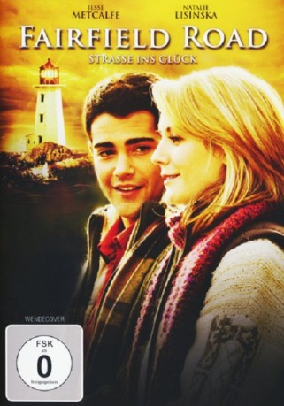

#3564 Fairfield Road - Straße ins Glück
Alternativ: Fairfield Road
 
 IMDB-Wertung: 6.0 / 10
IMDB-Wertung: 6.0 / 10  Metascore: 0
Metascore: 0 
Bei Großstädter Noah McManus (Jesse Metcalfe) geht so einiges schief: Erst wird nichts aus seinem Traumjob in Washington und dann findet er noch heraus, dass ihn seine Freundin, die er demnächst heiraten wollte, betrügt. Am Boden zerstört, macht er sich auf in ein beschauliches Städtchen an der Küste Neuenglands. Denn dahin ist auch der Verlobungsring unterwegs, den er als Überraschung für seine Zukünftige in eine dortige, romantische Pension geschickt hat und nun zurückholen möchte. Schon kurz nach seiner Ankunft fühlt sich Noah in dem kleinen Ort erstaunlich wohl. Als er dann auch noch die charmante Buchladen-Besitzerin Hailey Caldwell (Natalie Lisinska) kennenlernt, keimt in ihm der Gedanke, das Großstadtleben für immer hinter sich zu lassen.
Jahr: 2010
Dauer: 88 Minuten
FSK: 0
Land: USA Studio: Hallmark Channel, TheTonspuren: DTS - ,
Untertitel:
Auflösung: 1080p (1920x1080) Größe: 7464 MB
Genre: Drama
Regisseur: David Weaver
Drehbuch: Christoph Grissemann
Soundtrack:
Darsteller:
 Jesse Metcalfe als Noah McManus
Jesse Metcalfe als Noah McManus Derek McGrath als Sam Peabody
Derek McGrath als Sam Peabody- Brandon Firla als Randall Henderson
 Natalie Brown als Wendy Greenhill
Natalie Brown als Wendy Greenhill- Matthew Edison als Elliot Larkin
- Maria Ricossa als Mayor Christine Grantt
 Boyd Banks als Doug
Boyd Banks als Doug- Rob deLeeuw als Jesse
 Wayne Robson als Pete Kittredge
Wayne Robson als Pete Kittredge Art Hindle als Senator William Hayden
Art Hindle als Senator William Hayden- Richard Leacock als Mitchell Connelly
- Natalie Lisinska als Hailey Caldwell
- Chick Reid als Lillian Peabody
- Meg Walter als Mrs. Potiker
- Michael Rhoades als Man #1, Sam's Proxy
- Robbie Rox als Man #2, Randall's Proxy
- Florence Walker als Woman
- Uncle als Arlo - Dog
- Faith Curnew als Faith Larkin , uncredited
Datei: X:\2010(A-F)\Fairfield Road - Straße ins Glück (2010, FSK0, 1920x1080).mkv seit 03.05.2016
Festplatte: HD 2009(G-Z)-2010(A-F)
 Es gibt insgesamt 95 Filme in der Gruppe '2010(A-F)'
Es gibt insgesamt 95 Filme in der Gruppe '2010(A-F)'